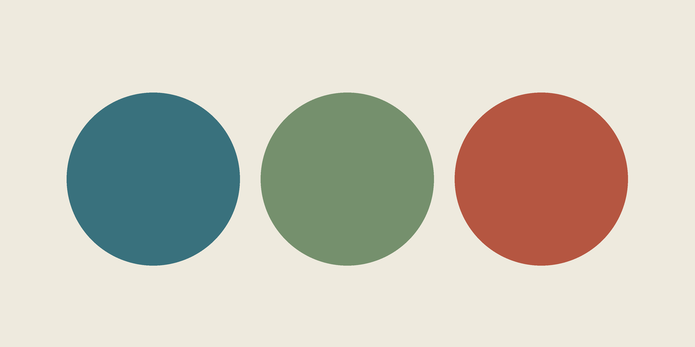

三色色卡
这张色卡用于检查正文插图的显示、缩放和左右顺序。PNG 文件包含三枚相同尺寸的圆形色块。
| 位置 | 颜色 | sRGB 色值 |
|---|---|---|
| 左 | 湖蓝 | #39717D |
| 中 | 草绿 | #75906D |
| 右 | 砖红 | #B55641 |
将整张图分别放入文章正文和网站预览，比较三种颜色的位置、边缘及四周的留白。手机的系统显示设置和屏幕差异会影响肉眼观感。
图文创作中可直接使用的原始素材。

这张色卡用于检查正文插图的显示、缩放和左右顺序。PNG 文件包含三枚相同尺寸的圆形色块。
| 位置 | 颜色 | sRGB 色值 |
|---|---|---|
| 左 | 湖蓝 | #39717D |
| 中 | 草绿 | #75906D |
| 右 | 砖红 | #B55641 |
将整张图分别放入文章正文和网站预览，比较三种颜色的位置、边缘及四周的留白。手机的系统显示设置和屏幕差异会影响肉眼观感。